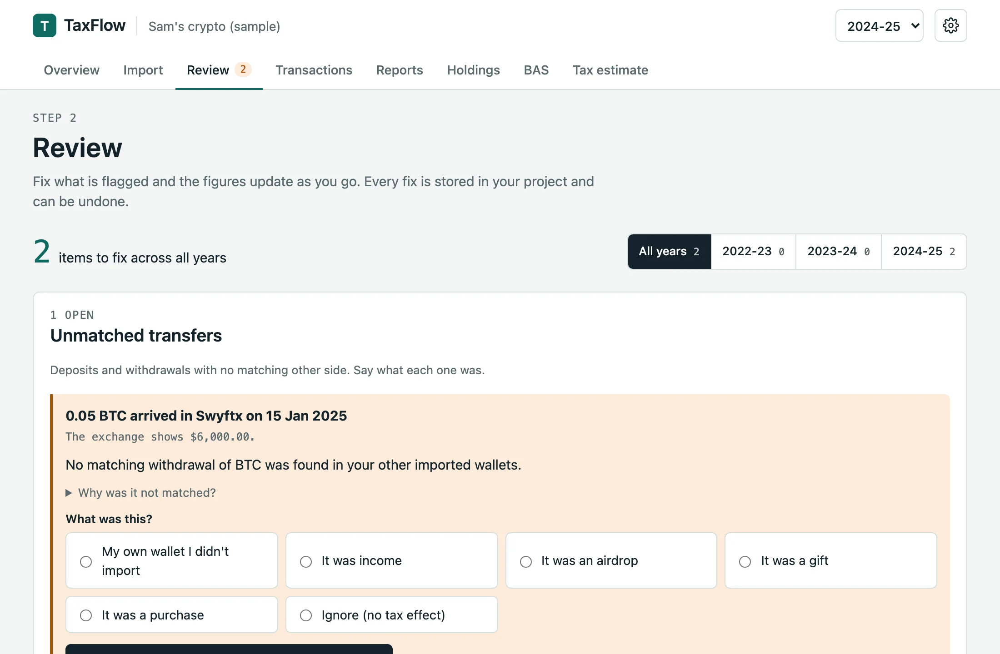
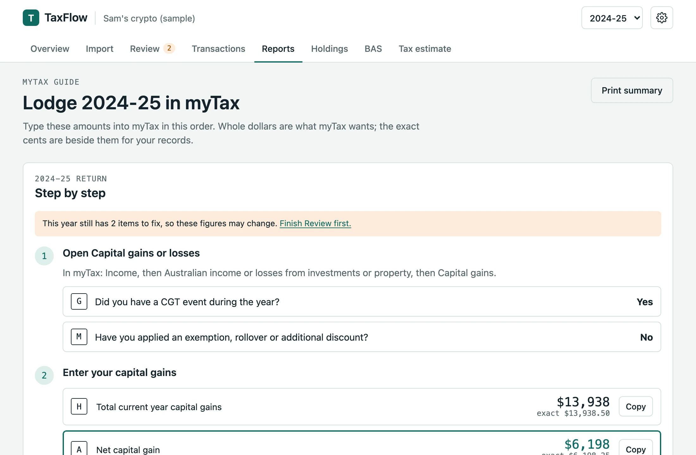

Features
Everything TaxFlow does, and how.
Import your exchange files, fix what is flagged and take return-ready figures to myTax or your tax agent. Every screen below is the real app, running the sample portfolio.
Import that shows its working
Exchange files are read in the page. Each one shows the layout TaxFlow recognised, how many rows it read, and every row it could not use, with the reason.

- File types
- CSV, TSV and text, Excel (.xlsx) and zip files of CSVs.
- Built-in readers
- CoinSpot, Swyftx, BTC Markets, Kraken ledgers, Binance, Coinbase, the Crypto.com App, OKX, KuCoin and the Koinly universal template.
- Column mapper
- Seven steps for any other layout: pick the date, amounts, assets and the meaning of each row type. Save it as a profile and reuse it.
- Presets
- Starting points for Independent Reserve and CoinJar, marked unconfirmed until checked against a real file.
- Time zones
- When a file has no time zone, TaxFlow asks which one it was exported in. It never assumes.
- Transfers
- Withdrawals and deposits between your own wallets are paired automatically when the match is unambiguous.
A review queue instead of silent guesses
A missing price is never treated as zero. Anything that would change a figure goes into Review with a plain explanation and a way to fix it, and the figures update as you go.

- Missing AUD values
- Enter a price, load a local price file, or accept a looked-up price with its source and date.
- Missing purchase history
- Coins sold with no record of buying them. Add the purchase or accept a $0 cost base knowingly.
- Unmatched transfers
- Deposits and withdrawals with no other side. Say whether it was your own wallet, a gift, income or a sale.
- Unreadable rows
- Listed by file and row so you can check them against the original export.
- Market valuations
- Values required when residency changes or for a trader’s closing stock on 30 June.
- Undo
- Every fix is stored in your project and can be reversed.
Australian rules, worked through properly
The engine is written against a specification of the Australian rules and checked against 215 hand-worked test cases. Money and quantities use exact decimal arithmetic from end to end.

- CGT discount
- Losses come off non-discountable gains first, then the 50% discount for individuals or one-third for SMSFs. Companies get none.
- Parcel methods
- FIFO, LIFO, HIFO and LTFO (lowest tax first out), with the result of each shown side by side.
- Investors and traders
- Capital treatment for investors; trading stock with opening and closing stock for a business.
- Residency
- Foreign and temporary residency periods, with the market values a change of residency requires.
- Special assets
- Collectables and personal use assets, and Division 775 foreign currency gains and losses.
- Airdrops
- Handled as draft TR 2026/D1 describes by default, with the earlier treatment available as a setting.
The figures myTax asks for, and the working behind them
Reports give whole-dollar figures for each label, the assumptions they rest on, and any review items still open, so you know how much to trust them.

- myTax capital gains
- Item 18 labels H, A and V, and the CGT schedule with crypto under other CGT assets.
- Other income
- Staking, rewards, interest and similar receipts, totalled for the year.
- Tax estimate
- An estimate of tax payable or refundable for 2024-25 to 2026-27, with what it leaves out stated.
- Agent pack
- A zip of disposals, income, holdings, records and summary CSVs, plus a JSON file keyed to the ATO’s reporting labels.
- Records
- The details the ATO expects you to keep for each transaction, with the date you can stop keeping them.
- Holdings
- What you still hold, its cost base, and a valuation snapshot for 1 July 2027.
BAS, GST and PAYG for crypto businesses
If you trade as a business and are registered for GST, TaxFlow works out the BAS figures for each period and the PAYG instalment working.

- BAS periods
- Quarterly or monthly, from your transactions in each period.
- GST working
- Crypto sales treated as input-taxed supplies, with exchange locations you confirm for the affected wallets.
- PAYG instalments
- Instalment working from your business income.
- Closing stock
- Your choice of valuation basis for trading stock on hand at 30 June.
Exports for SMSF accountants
For a self-managed super fund TaxFlow applies the one-third discount and produces files your fund accountant can bring into their software.
- BGL Simple Fund 360
- A File Import XML built from BGL’s official template, plus compact BGL worksheets.
- Class
- Portfolio and market-price worksheets for a Class handoff.
- Rounding
- Rounding residuals reported, so the totals reconcile.
- Status
- The XML structure is checked against the vendor template. Acceptance in a live fund still needs a sandbox check, so confirm the first import with your accountant.
One project, kept on your device
Everything you import, fix and choose is saved as a project in your browser. Nothing is kept anywhere else.
- Saved locally
- In the browser’s own database on this device, between visits.
- Backup and move
- Export the project as a JSON file and import it on another device or browser.
- Delete
- One button in Settings removes your project from this browser.
- Optional prices
- Online price lookup is off until you turn it on, and a local price file works without it.
Try it on the sample first.
A made-up Perth investor across three tax years, with a few things left to fix so you can see how Review works.
General information and calculations, not tax advice.